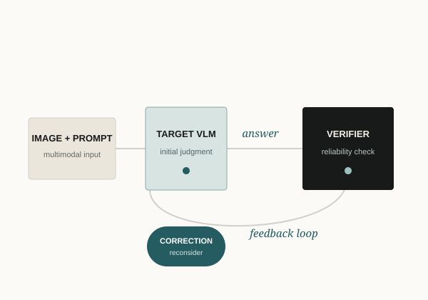

From correct answers to
trustworthy behavior.
Vision-language models can be confidently wrong. My current work focuses on reliability at inference time: diagnosing hallucination and reasoning failures, designing correction mechanisms, and asking whether a model's answer is actually supported by the evidence available to it.
Longer term, I am interested in reliable multimodal knowledge systems—systems in which representation, retrieval, evidence use, reasoning, and verification are studied as parts of the same reliability problem.